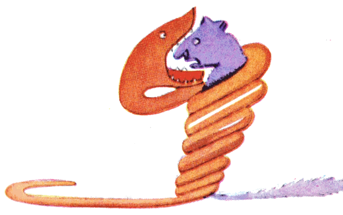
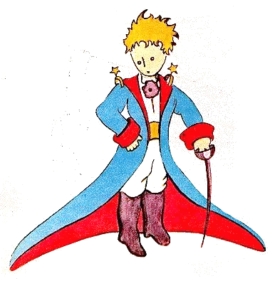
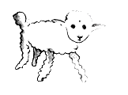
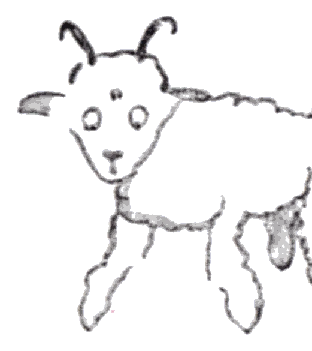
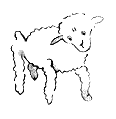
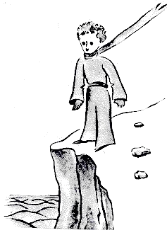
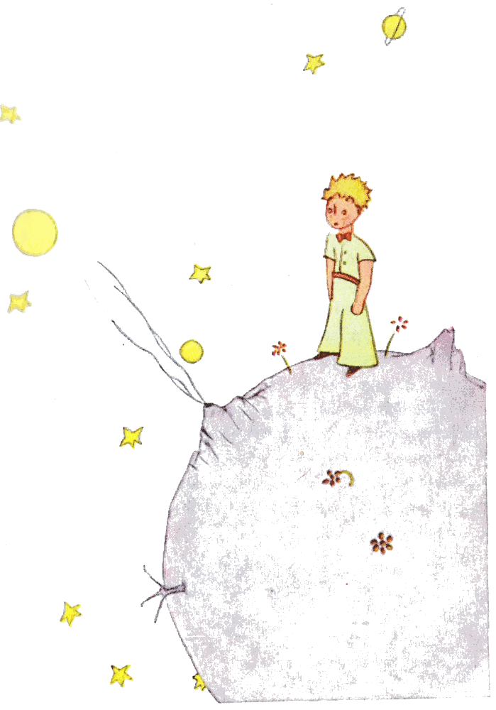
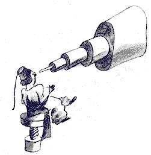
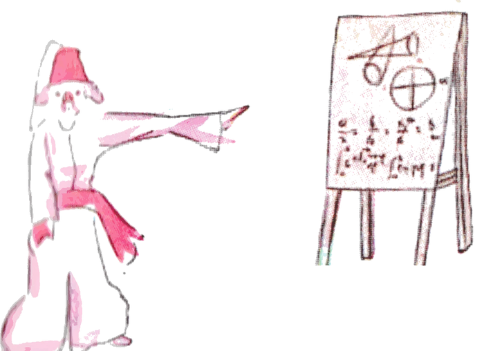
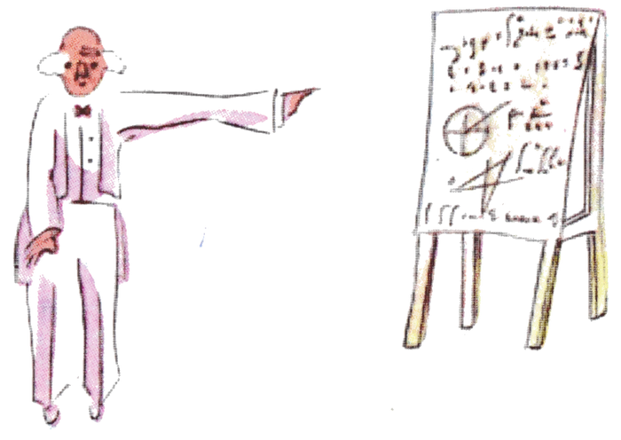

El principitoPrimeras páginas
Dedicatoria
A LÉON WERTH
Pido perdón a los niños por haber dedicado este libro a una persona mayor. Tengo una excusa seria: esta persona mayor es el mejor amigo que tengo en el mundo. Tengo otra excusa: esta persona mayor lo puede entender todo, hasta los libros para niños. Tengo una tercera excusa: esta persona mayor vive en Francia, donde pasa hambre y frío. Le hace mucha falta que la consuelen. Si todas estas excusas no bastan, quiero dedicar entonces este libro al niño que fue alguna vez esta persona mayor. Todas las personas mayores fueron primero niños. (Pero pocas lo recuerdan). Corrijo, pues, mi dedicatoria:
A LÉON WERTH
CUANDO ERA NIÑO
I
Cuando yo tenía seis años vi una vez una imagen magnífica en un libro sobre la selva virgen que se llamaba Historias vividas. Mostraba una serpiente boa que se tragaba a una fiera. Esta es la copia del dibujo.

En el libro decía: «Las serpientes boas se tragan a su presa entera, sin masticarla. Después ya no pueden moverse y duermen durante los seis meses que dura su digestión».
Me puse entonces a pensar mucho en las aventuras de la jungla y, a mi vez, logré trazar con un lápiz de color mi primer dibujo. Mi dibujo número 1. Era así:
Les mostré mi obra maestra a las personas mayores y les pregunté si mi dibujo les daba miedo.
Me contestaron: «¿Por qué habría de dar miedo un sombrero?».
Mi dibujo no era un sombrero. Era una serpiente boa que digería un elefante. Dibujé entonces el interior de la serpiente boa, para que las personas mayores pudieran entender. Siempre necesitan explicaciones. Mi dibujo número 2 era así:
Las personas mayores me aconsejaron dejar a un lado los dibujos de serpientes boas abiertas o cerradas y ocuparme más bien de la geografía, la historia, el cálculo y la gramática. Así fue como abandoné, a los seis años, una magnífica carrera de pintor. Me había desanimado el fracaso de mi dibujo número 1 y de mi dibujo número 2. Las personas mayores nunca entienden nada por sí solas, y es cansador para los niños tener que darles explicaciones una y otra vez.
Tuve, pues, que elegir otro oficio y aprendí a pilotear aviones. He volado un poco por todo el mundo. Y es verdad que la geografía me ha servido mucho. Sabía distinguir de un vistazo la China de Arizona. Eso es muy útil si uno se pierde de noche.
A lo largo de mi vida he tenido así montones de contactos con montones de gente seria. He vivido mucho entre las personas mayores. Las he visto muy de cerca. Eso no mejoró demasiado mi opinión.
Cuando me encontraba con alguna que me parecía un poco lúcida, hacía la prueba con ella de mi dibujo número 1, que siempre he guardado. Quería saber si era de verdad comprensiva. Pero siempre me respondía: «Es un sombrero». Entonces yo no le hablaba ni de serpientes boas, ni de selvas vírgenes, ni de estrellas. Me ponía a su altura. Le hablaba de bridge, de golf, de política y de corbatas. Y la persona mayor quedaba muy contenta de conocer a un hombre tan razonable.
II
Viví así, solo, sin nadie con quien hablar de verdad, hasta que tuve una avería en el desierto del Sahara, hace seis años. Algo se había roto en mi motor. Y como no llevaba conmigo ni mecánico ni pasajeros, me dispuse a intentar, yo solo, una reparación difícil. Para mí era cuestión de vida o muerte. Apenas tenía agua para beber durante ocho días.
La primera noche me dormí, pues, sobre la arena, a mil millas de cualquier tierra habitada. Estaba mucho más aislado que un náufrago en una balsa en medio del océano. Imaginen entonces mi sorpresa cuando, al amanecer, me despertó una vocecita extraña. Decía:
«Por favor... ¡dibújame un cordero!».
«¿Eh?».
«Dibújame un cordero...».
Me puse de pie de un salto, como si me hubiera caído un rayo. Me froté bien los ojos. Miré bien. Y vi a un hombrecito del todo extraordinario que me observaba con seriedad. Este es el mejor retrato que, más tarde, logré hacer de él. Pero mi dibujo, claro está, es mucho menos encantador que el modelo. No es culpa mía. Las personas mayores me habían desanimado de mi carrera de pintor a los seis años, y no había aprendido a dibujar nada, salvo boas cerradas y boas abiertas.

Miré, pues, aquella aparición con los ojos redondos de asombro. No olviden que me encontraba a mil millas de cualquier región habitada. Y sin embargo mi hombrecito no parecía ni perdido, ni muerto de cansancio, ni muerto de hambre, ni muerto de sed, ni muerto de miedo. No tenía en absoluto el aspecto de un niño perdido en medio del desierto, a mil millas de cualquier región habitada. Cuando por fin logré hablar, le dije:
«Pero ¿qué haces aquí?».
Y él me repitió entonces, muy despacio, como si se tratara de algo muy serio:
«Por favor... dibújame un cordero...».
Cuando el misterio impresiona demasiado, uno no se atreve a desobedecer. Por absurdo que me pareciera, a mil millas de todo lugar habitado y en peligro de muerte, saqué del bolsillo una hoja de papel y una pluma estilográfica. Pero recordé entonces que yo había estudiado sobre todo geografía, historia, cálculo y gramática, y le dije al hombrecito (con un poco de mal humor) que no sabía dibujar. Me respondió:
«No importa. Dibújame un cordero».
Como nunca había dibujado un cordero, rehíce para él uno de los dos únicos dibujos que sabía hacer. El de la boa cerrada. Y me quedé atónito al oír que el hombrecito me respondía:
«¡No! ¡No! No quiero un elefante dentro de una boa. Una boa es muy peligrosa, y un elefante ocupa mucho espacio. Donde yo vivo todo es muy pequeño. Necesito un cordero. Dibújame un cordero».
Entonces dibujé.
Miró con atención, y luego:

«¡No! Este ya está muy enfermo. Hazme otro».
Dibujé:

Mi amigo sonrió con amabilidad, con indulgencia:
«¿Ves?... Esto no es un cordero, es un carnero. Tiene cuernos...».
Rehíce, pues, una vez más mi dibujo, pero lo rechazó, como los anteriores:

«Este es demasiado viejo. Quiero un cordero que viva mucho tiempo».
Entonces, sin paciencia ya, porque tenía prisa por empezar a desmontar el motor, garabateé este dibujo.
Y le solté:
«Esta es la caja. El cordero que quieres está adentro».
Pero me sorprendió mucho ver cómo se iluminaba la cara de mi joven juez:
«¡Es justo como lo quería! ¿Crees que este cordero necesitará mucho pasto?».
«¿Por qué?».
«Porque donde yo vivo todo es muy pequeño...».
«Seguro que alcanzará. Te di un cordero muy pequeñito».
Inclinó la cabeza hacia el dibujo:
«No tan pequeño... ¡Mira! Se quedó dormido...».
Y así fue como conocí al principito.
III

Me costó mucho tiempo entender de dónde venía. El principito, que me hacía muchas preguntas, nunca parecía oír las mías. Fueron palabras dichas por casualidad las que, poco a poco, me lo revelaron todo. Así, cuando vio por primera vez mi avión (no voy a dibujar mi avión, es un dibujo demasiado complicado para mí), me preguntó:
«¿Qué es esa cosa?».
«No es una cosa. Vuela. Es un avión. Es mi avión».
Y yo estaba orgulloso de contarle que volaba. Entonces exclamó:
«¡Cómo! ¡Te caíste del cielo!».
«Sí», le dije con modestia.
«¡Ah! ¡Qué divertido!...».
Y el principito soltó una risa muy linda que me irritó mucho. Quiero que mis desgracias se tomen en serio. Después agregó:
«Entonces, ¡tú también vienes del cielo! ¿De qué planeta eres?».
Vislumbré de inmediato una luz en el misterio de su presencia, y le pregunté de golpe:
«¿Así que tú vienes de otro planeta?».
Pero no me contestó. Movía la cabeza suavemente sin dejar de mirar mi avión:
«Es verdad que, en eso, no puedes venir de muy lejos...».
Y se hundió en un ensueño que duró mucho rato. Luego, sacando mi cordero del bolsillo, se sumergió en la contemplación de su tesoro.
Imaginen cuánto me había intrigado esa media confidencia sobre «los otros planetas». Traté, pues, de saber algo más:
«¿De dónde vienes, hombrecito? ¿Dónde queda eso que llamas “donde yo vivo”? ¿Adónde quieres llevarte mi cordero?».
Me respondió después de un silencio pensativo:
«Lo bueno de la caja que me diste es que, de noche, le servirá de casa».
«Claro. Y si te portas bien, te daré también una cuerda para amarrarlo durante el día. Y una estaca».
La propuesta pareció escandalizar al principito:
«¿Amarrarlo? ¡Qué idea más rara!».
«Pero si no lo amarras, se irá a cualquier parte y se perderá...».
Y mi amigo soltó otra carcajada:
«Pero ¿adónde quieres que vaya?».
«A cualquier parte. Derecho hacia adelante...».
Entonces el principito observó con seriedad:
«No importa, ¡es tan pequeño donde yo vivo!».
Y, con un poco de melancolía, quizá, agregó:
«Derecho hacia adelante no se puede llegar muy lejos...».
IV
Así supe una segunda cosa muy importante: ¡su planeta de origen era apenas más grande que una casa!
Eso no podía asombrarme mucho. Sabía bien que, aparte de los planetas grandes como la Tierra, Júpiter, Marte o Venus, a los que se les ha dado nombre, hay cientos de otros que a veces son tan pequeños que cuesta mucho divisarlos con el telescopio. Cuando un astrónomo descubre uno de ellos, le pone por nombre un número. Lo llama, por ejemplo: «el asteroide 3251».
Tengo serias razones para creer que el planeta del que venía el principito es el asteroide B 612.

Este asteroide solo ha sido divisado una vez con el telescopio, en 1909, por un astrónomo turco.

El astrónomo hizo entonces una gran demostración de su descubrimiento en un Congreso Internacional de Astronomía.
Pero nadie le creyó por culpa de su traje. Así son las personas mayores.

Por suerte para la reputación del asteroide B 612, un dictador turco obligó a su pueblo, bajo pena de muerte, a vestirse a la europea. El astrónomo repitió su demostración en 1920, con un traje muy elegante. Y esta vez todo el mundo le dio la razón.

Si les he contado estos detalles sobre el asteroide B 612 y si les he confiado su número, es por las personas mayores. A las personas mayores les gustan las cifras. Cuando ustedes les hablan de un nuevo amigo, nunca les preguntan por lo esencial. Nunca les dicen: «¿Cómo es su voz? ¿Cuáles son sus juegos preferidos? ¿Colecciona mariposas?». Les preguntan: «¿Cuántos años tiene? ¿Cuántos hermanos tiene? ¿Cuánto pesa? ¿Cuánto gana su padre?». Solo entonces creen conocerlo. Si ustedes les dicen a las personas mayores: «He visto una casa preciosa de ladrillos rosados, con geranios en las ventanas y palomas en el techo...», no logran imaginarse esa casa. Hay que decirles: «He visto una casa de cien mil francos». Entonces exclaman: «¡Qué bonita es!».
Así, si ustedes les dicen: «La prueba de que el principito existió es que era encantador, que se reía y que quería un cordero. Cuando uno quiere un cordero, es la prueba de que existe», se encogerán de hombros y los tratarán a ustedes como a niños. Pero si les dicen: «El planeta del que venía es el asteroide B 612», entonces quedarán convencidas y los dejarán tranquilos con sus preguntas. Así son. No hay que guardarles rencor. Los niños deben ser muy indulgentes con las personas mayores.
Pero, claro, a nosotros, que entendemos la vida, ¡los números nos tienen sin cuidado! Me habría gustado empezar esta historia como los cuentos de hadas. Me habría gustado decir:
«Había una vez un principito que vivía en un planeta apenas más grande que él y que necesitaba un amigo...». Para los que entienden la vida, eso habría parecido mucho más verdadero.
Porque no me gusta que lean mi libro a la ligera. Siento tanta pena al contar estos recuerdos. Hace ya seis años que mi amigo se fue con su cordero. Si intento describirlo aquí, es para no olvidarlo. Es triste olvidar a un amigo. No todo el mundo ha tenido un amigo. Y yo puedo volverme como las personas mayores, que ya solo se interesan por las cifras. Por eso también me compré una caja de pinturas y unos lápices. ¡Es difícil volver a dibujar a mi edad, cuando uno nunca ha hecho otros intentos que el de una boa cerrada y el de una boa abierta, a los seis años! Trataré, por supuesto, de hacer los retratos lo más parecidos posible. Pero no estoy del todo seguro de lograrlo. Un dibujo resulta, y el otro ya no se parece. También me equivoco un poco en el tamaño. Aquí el principito es demasiado grande. Allá es demasiado pequeño. Dudo también sobre el color de su traje. Entonces tanteo por aquí y por allá, como mejor puedo. Por último, me equivocaré en algunos detalles más importantes. Pero eso tendrán que perdonármelo. Mi amigo nunca daba explicaciones. Quizá me creía parecido a él. Pero yo, por desgracia, no sé ver los corderos a través de las cajas. Quizá soy un poco como las personas mayores. Debo de haber envejecido.
Hasta aquí las primeras páginas. Para seguir leyendo, descarga el libro completo, gratis:
¿Cuál elegir? El PDF se abre directo en el navegador, en cualquier celular o computador. El EPUB queda en Descargas y se lee con una aplicación de lectura (Google Play Libros en Android, Libros en iPhone, Kindle o Kobo), que deja agrandar la letra.